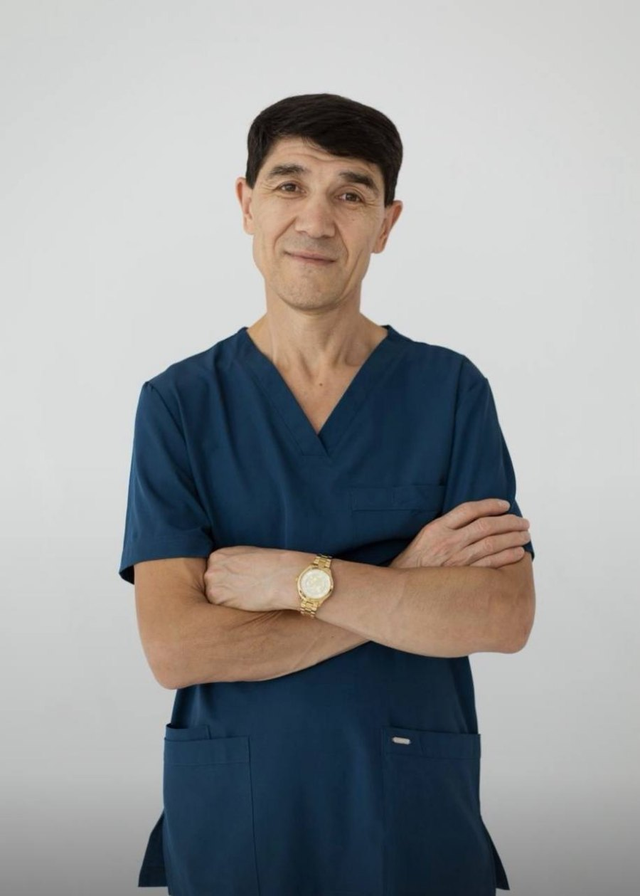
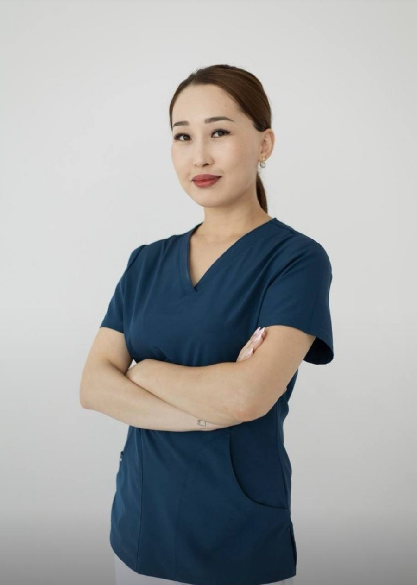
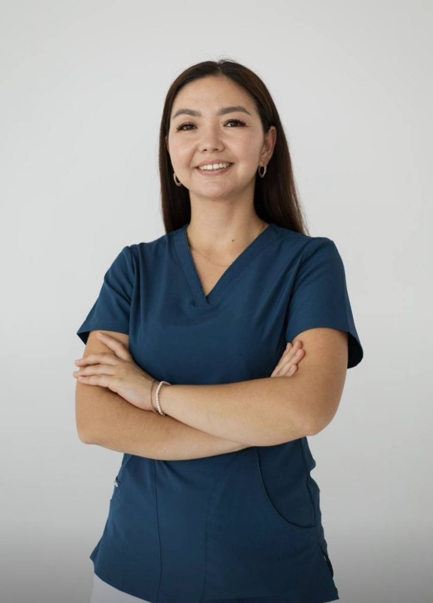
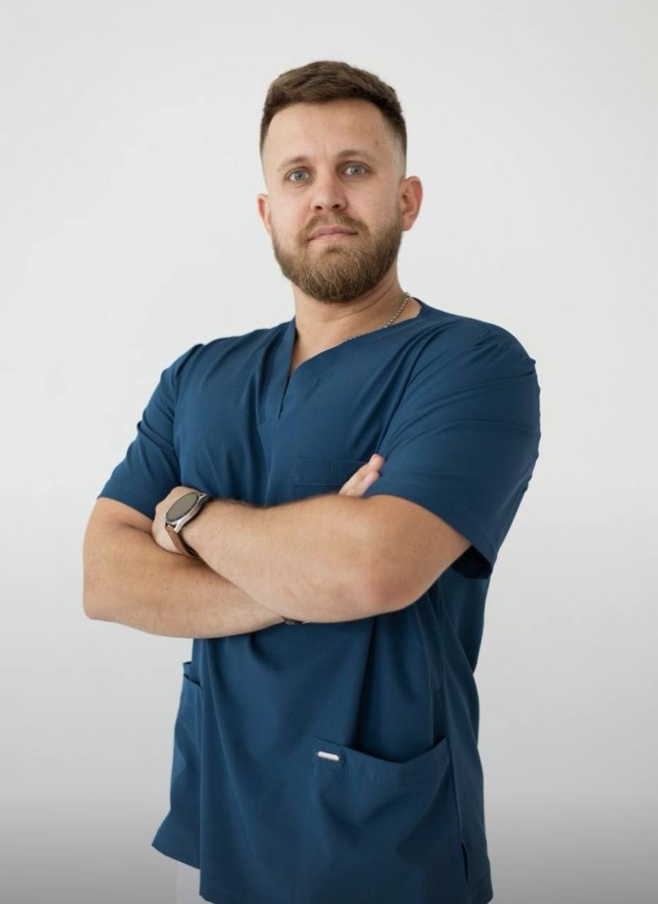
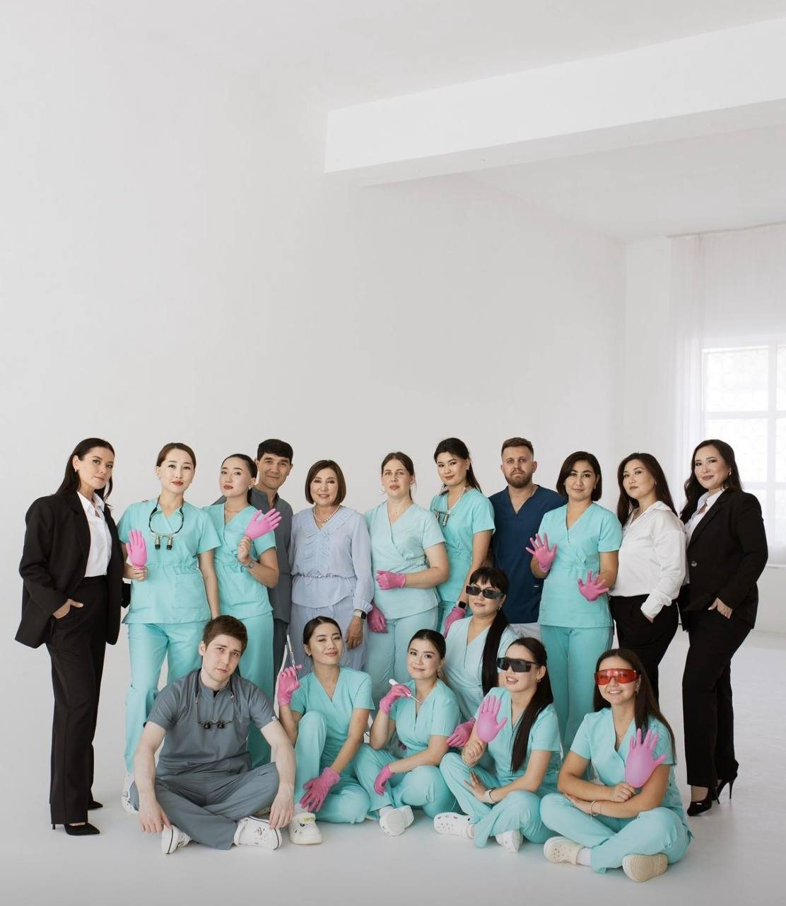

Полный цикл на месте
От консультации и КТ до имплантации и готового протеза — без поездок по другим центрам.
Успешно работаем с 2011 года
Импладент — клиника в Уральске с собственной хирургией и диагностикой. Имплантация All-on-4/6, лечение любой сложности, отдельное направление для детей. Первая консультация — бесплатно.
От консультации и КТ до имплантации и готового протеза — без поездок по другим центрам.
Костная пластика, восстановление слизистой ткани, операции при полной атрофии челюсти.
КТ зубов и прицельные снимки делаем в клинике — план лечения строится на точных данных.
Детские терапевт, ортодонт и хирург в штате — вся семья лечится в одной клинике.
Направления
Шесть направлений и полный набор специалистов — хирург, ортодонт, ортопед, терапевт и детские врачи. Что именно нужно в вашем случае, врач определит на бесплатной консультации.
Ключевое направление
Методика для тех, кто потерял большую часть зубов или носит съёмный протез. Несъёмный протез фиксируется на четырёх или шести имплантатах — челюсть снова работает как своя.
Осмотр, разбор ситуации и ответы на вопросы. Бесплатно и ни к чему не обязывает.
Компьютерная томография прямо в клинике — врач оценивает объём костной ткани.
4 или 6 имплантатов на челюсть. При нехватке кости выполняется костная пластика.
Протез фиксируется на установленные имплантаты — его не нужно снимать на ночь.
Важно: показания, сроки и точный план лечения врач определяет только на очной консультации после КТ. Клиника работает и со сложными случаями — включая полную атрофию челюсти, когда в имплантации уже отказали.
Команда
Люди, которым вы доверяете здоровье. Нажмите «Подробнее», чтобы прочитать об образовании и практике каждого врача.

Родился в посёлке Жанибек Западно-Казахстанской области. После института шесть лет проработал врачом в родном посёлке, а в 1999 году начал специализацию в области челюстно-лицевой хирургии.
В 2011 году основал Impladent в Уральске. Тогда команда состояла из 9 человек — сегодня в клинике работают около 25 сотрудников.
В своей практике выполняет имплантацию, костную пластику, восстановление слизистой ткани и сложные операции при полной атрофии челюсти.

Специализируется на терапевтическом лечении и микроскопической эндодонтии — лечении корневых каналов, где важны точность, аккуратность и уверенность.
За годы практики зарекомендовала себя как профессионал, которому доверяют и взрослые, и подростки. Пациенты отмечают лёгкость в общении и доброжелательность — от Алии Мукишевны уходят не только с красивой улыбкой, но и с хорошим настроением.

Профессию выбрала ещё в 9 классе — целенаправленно готовилась и поступила на грант. В Impladent пришла в апреле 2018 года: уже имела клинический опыт, но хотела развиваться дальше, осваивать современные технологии и работать в команде сильных специалистов.
«Для меня самое важное — видеть счастливые лица пациентов. Когда человек приходит с болью, тревогой и неуверенностью, а уходит со здоровой улыбкой и благодарностью — это бесценно».

После Саратовского медуниверситета проходил интернатуру в Актобе, а практику — в отделении челюстно-лицевой хирургии областной больницы Уральска.
В Impladent пришёл ещё студентом: Талгат Муратович дал возможность проходить практику и набираться опыта в клинике. Во время интернатуры половину дня был в отделении ЧЛХ, остальное время — ассистентом Талгата Муратовича. С 2017 года — врач клиники.
Выполняет полное съёмное протезирование, установку дентальных имплантатов, металлокерамические коронки и виниры, владеет техниками наращивания костной ткани. Продолжает посещать курсы ведущих врачей и лекторов Казахстана и России.

«В 2011 году наша команда состояла всего из 9 человек. Сегодня в клинике работают около 25 сотрудников». Джамиев Талгат Муратович, основатель Impladent
За эти годы клиника выросла в команду, которая закрывает почти любую стоматологическую задачу: от лечения кариеса у ребёнка до имплантации при полной атрофии челюсти. Врачи регулярно ездят на курсы и конференции — в Казахстане, России и за рубежом.
Отзывы пациентов
Настоящие отзывы пациентов, оставленные в 2GIS.
«Делала тут все зубы! Имплантация прошла отлично, Талгату Муратовичу большое спасибо. Алие Мукишевне большое спасибо — лечила у неё зубы, супер стоматолог! Отдельно спасибо ассистенткам врачей. Всегда вежливый персонал, решают все вопросы».
«Здравствуйте! Impladent — стоматология на высшем уровне, внимательный персонал, профессиональные врачи, я довольна! Рекомендую посетить эту стоматологию каждому желающему получить консультацию и лечение на высшем уровне!»
«Отличный сервис, обслуживание на высоте. Советую обращаться».
Листайте вбок, чтобы прочитать больше отзывов
Контакты
Напишите в WhatsApp или позвоните — подберём удобное время. Первая консультация бесплатная.